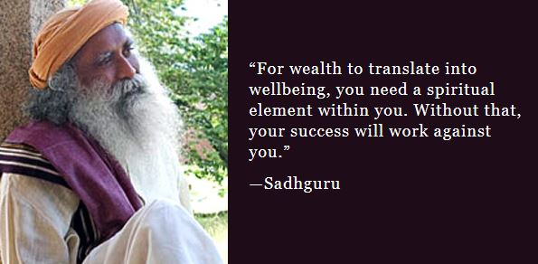

The world we live in is a world filled with problems that need fixing. There’s a lot of inequality, violence, and unhappiness. However, we should add that there is still a lot of happiness in it as well as prosperity.
The problem lies in the fact that there are all of these numerous conditions for a better, happier, more prosperous world, but we lack the consciousness needed to mold such a world fully.
Many of us have the potential to be the leaders who will change the world for the better. What we lack is pure self-awareness. That’s what Jaggi Vasudev, better known as Sadhguru, wants to teach us. His Isha Foundation was created to provide that heightened self-awareness that we all need to make a difference in the world.
Early life and education
Jaggi Vasudev was born on 3 September 1957 in Mysore, Karnataka, India to a Telugu speaking family. He was the youngest of four children – two boys and two girls. His mother was a housewife and his father an ophthalmologist with Indian Railways. Due to the nature of his father's job, the family moved frequently.
After his schooling at Demonstration School, Mysore and Mahajana Pre-University College, Vasudev graduated from the University of Mysore with a bachelor's degree in English, despite a spotty attendance record and an irreverent attitude to tuition. Defying his parents’ wishes, he refused to pursue a post-graduate course and took to business instead.

Spirituality
Aged thirteen, Yasudev took yoga lessons from Malladihalli Raghavendra, and kept practicing asanas and pranayama daily throughout his youth, albeit without spiritual aspirations. At the age of 25, on 23 September 1982, he went up Chamundi Hill and sat on a rock, where he had a 'spiritual experience'. Six weeks afterwards, he left his business to his friend and travelled extensively in an effort to gain insight into his mystical experience. After about a year of meditation and travel, he decided to teach yoga to share his inner experience.
In 1983, he taught his first yoga class with seven participants in Mysore. Over time, he began conducting yoga classes across Karnataka and Hyderabad travelling on his motorcycle, subsisting on the produce of his poultry farm rental and donating the collections received from his students to a local charity on the last day of the class.

Family
Jaggi Vasudev was married to Vijaya Kumari, known by her nickname Vijji. This was Kumari's second marriage. Prior to marrying Vasudev she worked in a bank, a position she retained until early 1996. The couple had a daughter named Radhe. Kumari died on 23 December 1997. At that time her father alleged that Vasudev had murdered her; Vasudev asserted that she had attained mahasamadhi and claimed she had told him about it nine months before her death. The police investigation found no fault in him.
Vasudev's daughter Radhe Jaggi, born 1990, is a trained bharatanatyam dancer. She married Chennai-based classical vocalist Sandeep Narayan in 2014.